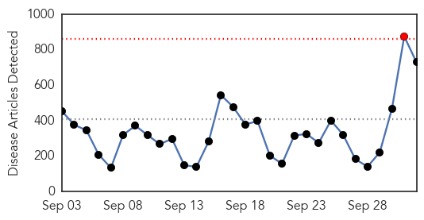
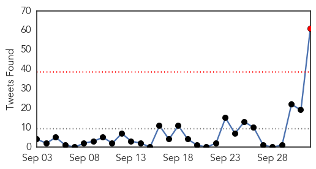
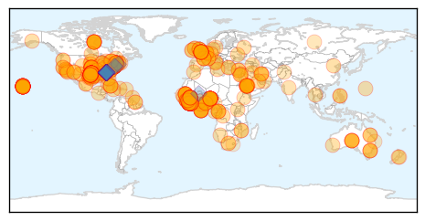

Ebola
30-Day Web Trend
1 alerts, 0 warnings

30-Day Twitter Trend
1 alerts, 0 warnings

Article Locations
Article Confidences
Top Articles:
- 1.000
- First Ebola case diagnosed in US
- 1.000
- Ebola crisis requires global response
- 1.000
- What you need to know now
- 1.000
- Soap, bleach — and a way to get it to Ebola crisis areas
- 1.000
- Up to 100 People Could Have Had Contact With Ebola Patient
- 1.000
- US sends medical experts to study how Nigeria tamed Ebola
- 1.000
- FACTBOX-The worst Ebola outbreak on record
- 1.000
- First Ebola Diagnosis in the U.S.
- 1.000
- Inland Empire Ebola preparations intensify
- 1.000
- Putting Ebola's risks into perspective
- 1.000
- Ebola in the US: Children exposed to Ebola patient who was seen vomiting in street before hospital admission
- 1.000
- Ebola outbreak sees second man monitored in US, could it come to UK?
- 1.000
- The Ebola crisis: 17 important moments in 2014
- 1.000
- WHO: 1,500 Ebola vaccine doses ready for use in early 2015
- 1.000
- Fight against Ebola: Government distributes PPEs
- 1.000
- Health officials looking at 100 possible contacts of Ebola victim
- 1.000
- Ebola patient told hospital he had been to Liberia
- 1.000
- Up to 18 exposed to U.S. Ebola patient, including children
- 1.000
- HEALTH ALERT: Is the Inland Northwest ready should an Ebola outb
- 1.000
- Spokane, North Idaho News & Weather KHQ.com
- 1.000
- The reality of Ebola: Buckets of chlorine in the streets, and no one shakes hands any more
- 1.000
- Ebola in the US: Infected patient named as five children monitored for possible symptoms
- 1.000
- Ebola virus outbreak: 'Five people infected every hour' in Sierra Leone
- 1.000
- Ebola outbreak: Emirates President says virus has hit Asian demand for Africa flights
- 1.000
- Ebola virus: Pandemic should be treated 'the same way' as threat posed by nuclear weapons, security officials say
- 1.000
- Ebola virus US: What is it, what are the symptoms, and is there a cure?
- 1.000
- Hawaii Places Patient in Isolation over Virus Fears
- 1.000
- 5 People Are Infected With Ebola Every Hour In Sierra Leone
- 1.000
- MERS risk for Ebola-torn west Africa in early 2015
- 1.000
- First Ebola confirmed in U.S.
- 1.000
- UN Ebola chief raises 'nightmare' that virus could become airborne
- 1.000
- UN Ebola chief raises 'nightmare' that virus could become airborne
- 1.000
- Patient in Hawaii is in isolation with suspected Ebola
- 1.000
- US Ebola victim helped carry infected woman days before flying to Texas
- 1.000
- Ebola crisis: Could the virus spread in the US?
- 1.000
- Ebola Spread Fuels Fear Among Americans, Africans
- 1.000
- Ebola crisis: Infected Liberian man in Texas may have had contact with 100 people, family in quarantine, Obama pledges federal response
- 1.000
- More Ebola cases in USA likely, health experts say
- 1.000
- Hawaii patient placed in isolation does not have Ebola
- 1.000
- Breaking News for Calaveras County & Beyond!- The Pine Tree .net
- 1.000
- 100 people were in contact with Dallas Ebola patient – health officials — RT USA
- 1.000
- First Ebola case confirmed in U.S.
- 1.000
- Dallas hospital confirms first Ebola case in US
- 1.000
- US sends medical experts to study how Nigeria tamed Ebola
- 1.000
- Ebola in a Hawaii Patient? Much Too Early to Know, Officials Say
- 1.000
- Ebola Fast Facts
- 1.000
- … Jamaica focuses on points of entry
- 1.000
- About 100 People Being Monitored for Ebola in Texas
- 1.000
- Ebola patient told hospital he was from Liberia
- 1.000
- TAKE A LOOK- The Ebola outbreak
Showing top 50 articles...
Top Tweets:
- 0.989
- .@StevenGAdvocate Ebola is a rare and deadly disease caused by infection with one of the Ebola virus strains CDCchat
- 0.978
- .@MensHlthNetwork The current ebola outbreak is unprecedented in scale and spread. Past ebola outbreaks were very different. cdcchat
- 0.978
- Ebola Facts: A person infected with Ebola virus is not contagious until symptoms appear. http://t.co/51O4bHlYTU
- 0.958
- Ebola outbreak: 'Five infected every hour' in Sierra Leone. http://t.co/1C1Lqo0ubg @BBCAfrica
- 0.958
- .@bichnguyen0123 Patient was not infected with ebola in Dallas. He was exposed to a sick Ebola patient in Liberia prior to travel. cdcchat
- 0.949
- More ElbowOutEbola efforts. SierraLeone suspends female genital mutilation over Ebola. @Sianaarrgh protectwomen
- 0.937
- .@Danm414 - The strain in Dallas is the Ebola Zaire virus - consistent with the epidemic strain in West Africa. CDCchat
- 0.932
- .@atwalsukhreet To prevent ebola spread to other regions, we must control the outbreak at its source in West Africa. cdcchat
- 0.927
- .@lsinco Need to stop epidemic in West Africa. More Ebola treatment units there are critical to contain spread
- 0.922
- CDC’s surge response means we are taking no chances, leaving no stone unturned, until 100% sure Ebola virus contained. CDCchat
- 0.916
- .@JensEmjens Yes, the Ebola virus is present in sweat. CDCChat
- 0.913
- .@gentleglide In current the outbreak, about 1 in 2 are dying from Ebola. CDCchat
- 0.912
- .@art_fan_8000 Ebola is not spread through insects and the virus dies through drying. cdcchat
- 0.901
- .@nursefriendly Ebola only transmitted thru contact w/ body fluids from an infected person; a cough is unlikely to spread Ebola CDCChat
- 0.893
- .@set1958 - The patient did not have symptoms or exposure history consistent with Ebola. CDCchat
- 0.859
- .@Bk2008Karcher The Ebola virus is present in sweat so that is possible. CDCChat
- 0.844
- .@daisymoo If person w/Ebola sneezes on someone & saliva/mucus contacts person’s eyes, nose, mouth, the disease may be spread. CDCchat
- 0.826
- Imposing quarantine on entire nations would backfire and fuel the Ebola epidemic. CDCchat
- 0.818
- .@Thatkhyguy Ebola in Liberia is not spreading b/c of public touching. Sick people spread to their families through body fluids.. cdcchat
- 0.812
- .@carson_angela Ebola is spread through direct contact with the blood or body fluids of a person who is sick with Ebola. CDCchat
- 0.809
- .@marc_2127 Ebola can enter through broken skin or unprotected mucus membranes. CDCchat
- 0.791
- IDC report claims that cuts to health aid compromised fight against Ebola in Liberia & SierraLeone. Sustained health spending is crucial
- 0.776
- .@HeyDrWilson 1) Learn how ebola spreads 2) essential travel only to epidemic countries 3) give aid if you can... CDCchat
- 0.771
- RT: Imposing quarantine on entire nations would backfire and fuel the Ebola epidemic. CDCchat
- 0.770
- Ebola healthcare workers wear protective gear to protect themselves from bodily fluids not because Ebola is airborne.
- 0.770
- Ebola healthcare workers wear protective gear to protect themselves from bodily fluids not because Ebola is airborne.
- 0.770
- Ebola healthcare workers wear protective gear to protect themselves from bodily fluids not because Ebola is airborne.
- 0.765
- .@Vinothini440 There is no treatment for Ebola. The disease can be very serious for pregnant women & the fetus. CDCchat
- 0.754
- .@MarcEvansImages There is no evidence that mosquitos or other insects can transmit Ebola virus. http://t.co/Ibl3TuSWUO CDCChat
- 0.754
- There is no evidence that mosquitos or other insects can transmit Ebola virus. http://t.co/VcvMgvZqgs
- 0.743
- RT: Ebola healthcare workers wear protective gear to protect themselves from bodily fluids not because Ebola is airborne.
- 0.743
- Health workers in Liberia encounter resistance from some Ebola patients when trying to move them to health clinics. http://t.co/WR16gNg3IY
- 0.740
- How big data could help stop the Ebola outbreak http://t.co/3nu03nZTqd EbolaResponse
- 0.737
- US patient didn't have symptoms during flights from Africa. Ebola is only contagious after symptoms begin.
- 0.737
- - US patient didn't have symptoms during flights from Africa. Ebola is only contagious after symptoms begin.
- 0.737
- - US patient didn't have symptoms during flights from Africa. Ebola is only contagious after symptoms begin.
- 0.735
- Welcome to today’s CDCchat on Ebola. Thanks for joining us! We know you have many questions about Ebola & the 1st confirmed US case.
- 0.734
- .@marcuspearl429 Ebola not spread through the air like flu or measles. Spread through close contact with bodily fluids CDCchat
- 0.727
- Hi! This is Jennifer McQuiston, Ebola subject matter expert soon-to-deploy to Sierra Leone in West Africa. CDCchat
- 0.727
- .@tkyletucker Viruses do mutate, but Ebola is very slow at mutation, so unlikely. Best to stop epidemic quickly. CDCchat
- 0.725
- In Sierra Leone alone, an estimated 765 new cases of Ebola were reported last week - a rate of five every hour. http://t.co/WoE8V1khfF
- 0.724
- .@iAmTattalicious Ebola is only contagious after symptoms are present. CDCChat
- 0.724
- .@Apodamndaca Ebola is only contagious after symptoms are present. CDCChat
- 0.719
- - • Ebola is not a respiratory disease like the flu, so it is not spread through the air. http://t.co/1OsrUzqssF
- 0.719
- - Ebola is not a respiratory disease like the flu, so it is not spread through the air. http://t.co/1OsrUzqssF
- 0.717
- - Ebola spreads by contact w/ sick person’s blood/body fluids, contact w/ contaminated objects, or infected animals.
- 0.708
- .@ShusontheHill There is no treatment for Ebola. Fluids & supportive care are given. CDCChat
- 0.707
- MT: Very important for every country to have ability to prevent, detect, respond to infectious diseases. Ebola GHSAgenda
- 0.706
- .@raymondemery Not a pandemic, but largest Ebola epidemic in history. We need to act quickly to control it. CDCchat
- 0.702
- Understand people are concerned about Ebola. CDC & Dallas/Texas working hard to identify people who may have been exposed. CDCchat
Showing top 50 tweets...
Pertussis
30-Day Web Trend
0 alerts, 0 warnings

30-Day Twitter Trend
0 alerts, 0 warnings

Article Locations

Article Confidences

Top Articles:
-
No articles found for Oct 02, 2014
Top Tweets:
-
No tweets found for Oct 02, 2014